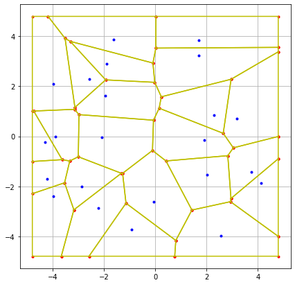
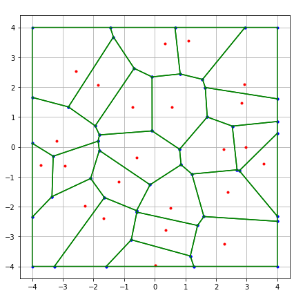

Point process discrimination according to repulsion
Contents
Point process discrimination according to repulsion#
Abstract#
In numerous applications, cloud of points do seem to exhibit repulsion in the intuitive sense that there is no local cluster as in a Poisson process. Motivated by data coming from cellular networks, we devise a classification algorithm based on the form of the Voronoi cells. We show that, for data representing the locations of antennas in a cellular networks, we can retrieve some repulsion between antennas, a feature that was expected for engineering reasons.
Introduction#
In the performance analysis of cellular systems, the locations of antennas (or base stations) play a major role (see [@BaccelliStochasticGeometryWireless2008]). It is usually admitted that they can be modeled by a Poisson process. But the data which can be gathered from the Web site of the French National Agency of Radio Frequencies, Cartoradio, see [@ANFR], tend to prove that this may not be the case. More precisely, if we look at the global picture of all antennas in Paris, we see features reminiscent of a Poisson process (local clusters for instance), see Figure [fig:antennas]{reference-type=”ref” reference=”fig:antennas”}. However, if we look closer and finer, by specifying a region and a frequency band, we see that the antennas locations do seem to exhibit some repulsion (see Figure [fig:antennas]{reference-type=”ref” reference=”fig:antennas”}, right picture).
{width="45%"} {width="45%"}
In previous papers, point processes with repulsion have been used to model such systems [@Deng2014; @Miyoshi2016; @gomez_case_2015] for no reason but a mere resemblance between the pictures like the right picture of Figure [fig:antennas]{reference-type=”ref” reference=”fig:antennas”} and those obtained by simulating a point process with repulsion. The question is then to decide, given one sample of positions of base stations in a bounded domain, whether it is more likely to be modeled by a point process with repulsion or by a neutral point process, i.e. where the locations could be considered as coming from independent drawings of some identically distributed random variables. As we only have a single realization, we cannot use frequency methods. Since the observation window is finite, we cannot either resort to estimates based on stationarity or ergodicity and we must take care from the side effects.
The rationale behind our work comes from [@goldman_palm_2010]. It is shown there that the Voronoi cells of the Ginibre point process (a particular point process with repulsion, see below for the exact definition) are in some sense more regular (closer to a circle) than those of a Poisson process (see Theorem 1{reference-type=”ref” reference=”thm:goldman”}). By simulation, this feature seem to persist for other point processes with repulsion, like Gibbs processes. It is this aspect that we use to construct our classification algorithm. We will simulate several configurations (repulsive and non-repulsive) with the same given number of points \(N\). For each configuration, we will compute the Voronoi diagrams and construct two vectors which will represent the input of our algorithm; an area vector containing the areas of the \(10\) innermost Voronoi cells in order to avoid edge effects, plus \(4\) other average areas from \(20\) cells to have more information on the configuration. And a second perimeter vector which is constructed in the same way, containing the squared perimeters of the corresponding Voronoi cells. The choice of areas and square perimeters as aspects to our classification task is based on the isoperimetric inequality in \(\mathbf{R}^2\) that states, for the length \(P\) of a closed curve and the area \(A\) of the planar region that it encloses, that $\(P^2 \ge 4 \pi A\)$ and that equality holds if and only if the curve is a circle. After normalization, we test some classical ML models (logistic regression, random forest, support vector machine, XGBoost) to classify between repulsive and neutral point processes. The results are surprisingly good even though we trained our models only on Ginibre point processes to represent the whole family of point processes with repulsion.
This paper is organized as follows. We first recall the theoretical notions that we will need in the rest of this paper. We will also briefly define the Papangelou intensity which is at the core of the definition of repulsion. In section 3 we show numerically, and based on two Machine Learning classification models, how the locations of antennas in Paris can be considered as repulsive configurations.
Preliminaries#
A configuration on \(E=\mathbf R^2\) is a locally finite (respectively finite) subset of \(E\). The space of configurations (respectively finite configurations) is denoted \(\mathfrak N\) (respectively \(\mathfrak N_{f}\)). We equip \(\mathfrak N\) with the topology of vague convergence, under which it is a complete, separable, metric space. We denote by \(\mathcal B(\mathfrak N)\) the Borelean \(\sigma\)-field on \(\mathfrak N\). A locally finite (respectively finite) point process is a random variable with values in \(\mathfrak N\) (respectively \(\mathfrak N_{f}\)). The distribution of a point process can be described through its so-called correlation functions.
**Definition 1**. *Let $\Phi$ be a locally finite point process on $E$.
Its correlation functions
$\rho^{(k)} \colon \mathfrak N_{f} \to \mathbf R_+$ are given for any
measurable function $f \colon \mathfrak N_{f} \to \mathbf R_+$ by:
$$\mathbb{E}\left[ \sum_{\substack{\alpha \in \mathfrak N_{f} \\ \alpha \subset \Phi}} f(\alpha) \right] = \sum_{k=1}^{+ \infty} \frac{1}{k!} \int_{(E)^k} f(\{x_1, \dots, x_k\}) \rho^{(k)}(\{x_1, \dots, x_k\}) \, \text{ d}x_1 \ldots \text{ d}x_k .$$*
It is however easier to work with the so-called Janossy measures, whose links with correlation functions are given in [@Daley2003].
**Definition 2**. *Let $\Phi$ be a finite point process on $E$. Its
Janossy measure $J$ is given for any $A \in \mathcal B(\mathfrak N_f)$
by:
$$\mathbb{P}(\Phi \in A) = \sum_{k=1}^{+ \infty} \frac{1}{k!} J(A^{(k)}),$$
where, for any
$k \in \mathbf N^*, \; A^{(k)} = \{ \phi \in A,\; \phi(E) = k \}$.*
**Definition 3**. *Let $\Phi$ be a finite point process on $E$. It is
said to be regular if there exist Janossy functions $(j^{(k)}, k\ge 0)$
such that for any measurable $f\, :\, \mathfrak N_{f}\to \mathbf R^{+}$,
we have
$$E[ f(\Phi) ] = \sum_{n\ge 0} \frac{1}{n!} \int_{E^n} f(\{x_1,\dots,x_n\}) \, j^{(n)}(\{x_1,\dots,x_n\})\text{ d}x_1\ldots \text{ d}x_n.$$*
With this definition in hand, we can define the concept of repulsion , following [@Georgii2005].
**Definition 4**. *For $\Phi$ a finite point regular process on $E$ with
Janossy functions $(j^{(k)},\, k\ge 0)$, its Papangelou intensity $c$ is
given for any $x \in E$ and $\phi \in \mathfrak N_{f}$ by:
$$c(x, \phi) = \frac{j^{(k+1)}(\{x\}\cup \phi)}{j^{(k)}(\phi)} \, \mathbf{1}_{\{j^{(k)}(\phi) \ne 0\} } \text{ if } \phi(E)=k.$$*
The quantity \(c(x,\phi)\) can be intuitively thought as the probability to have a particle at \(x\) given the observation \(\phi\). Intuitively a point process shows repulsion when \(\phi\mapsto c(x,\phi)\) is, in some sense, decreasing:
**Definition 5**. *A point process $\Phi$ on $E$ with a version $c$ of
its Papangelou intensity is said to be repulsive if, for any
$\omega, \phi \in \mathfrak N_{f}$ such that $\omega \subset \phi$ and
any $x \in E$, $$c(x,\phi) \le c(x, \omega).$$*
With this definition, it is not hard to see that Gibbs point processes, determinantal point processes are repulsive (see [@Georgii2005; @HoughDeterminantalprocessesindependence2006]). We will not dwell into the vast literature about determinantal point processes, we only focus on the so-called Ginibre point process. It has the interesting feature that we know its distribution when restricted to a compact ball in \(E\). For reasons which will be self-evident, we identify hereafter \(\mathbf R^{2}\) and \(\mathbf C\).
**Definition 6**. *The Ginibre point process with intensity
$\rho = \frac{\lambda}{\pi}$ (with $\lambda > 0)$ is a locally finite
point process on $\mathbf C$ that can be defined by its correlation
functions: $$\label{eq:correlation_functions_determinantal}
\rho^{(k)}(x_1, \dots, x_k) = \det(K(x_i, x_j), \; 1\le i,j \le k)$$
where $K$ is given by
$$K(x,y) = \rho \, e^{-\frac{\lambda}{2}(|x|^2 + |y|^2)}e^{\lambda x \bar{y}},\ \forall \, (x,y) \in \mathbf C^2.$$*
*When restricted to the $B(0,R)$, the Ginibre point process admits
correlation functions of the
form [\[eq:correlation_functions_determinantal\]](#eq:correlation_functions_determinantal){reference-type="ref"
reference="eq:correlation_functions_determinantal"} with $K=K_R$ given
by $$\label{eq_main:1}
K_R(x,y)=\sum_{j=1}^\infty \frac{\gamma(j+1,R^2)}{j!} \phi_j(x)\phi_j(\bar y)$$
with
$$\phi_j(x)=\sqrt{\frac{\rho}{\gamma(j+1,R^2)}} \left(\sqrt{\lambda}x\right)^j\, e^{-\frac{\lambda}{2} |x|^2}.$$
and $\gamma(n,x)$ is the lower incomplete Gamma function.*
The simulation of such a point process is a delicate matter, first solved in [@HoughDeterminantalprocessesindependence2006]. It remains costly because the algorithm contains complex calculations and some rejections. In order to fasten the procedure, an approximate algorithm has been given in [@MR4279876] (see the bibliography therein to get the URL of the Python code).
For an at most denumerable set of points \(\{x_{n}, \, n\ge 1\}\), the Voronoi cells are defined as the convex sets $\(\mathcal{C}(x_{i})=\{z\in \mathbf C,\ |z-x_{i}|\le |z-x_{j}| \text{ for all }j\neq i\}.\)\( When the points are drawn from a point process, we thus have a collection of random closed sets. When the process under consideration is stationary with respect to translations, it is customary to define the typical law of a Voronoi cell as the law of the cell containing the origin of \)\mathbf R^{2}\( when the point process is taken under its Palm distribution [@goldman_palm_2010; @BaccelliStochasticGeometryWireless2009]. It turns out that we know the Palm distribution of the Poisson process (which is itself) and of the Ginibre point process (the correlation functions are of the form [\[eq:correlation_functions_determinantal\]](#eq:correlation_functions_determinantal){reference-type="eqref" reference="eq:correlation_functions_determinantal"} with \)K\( being \)K_{R}\( with the first term removed). We denote by \)\mathcal{C}p\( (respectively \)C{G}\() the typical cell of the Voronoi tessellation associated to a stationary Poisson process in \)\mathbf C\( with intensity \)\lambda\( (respectively to the Ginibre point process of intensity \)\rho$). One of the main theorems of [@goldman_palm_2010] is the following.
**Theorem 1**. *When $r \to 0,$
$$\mathbb{E} \left[ V(\mathcal{C}_{G} \cap B(0,r)) \right] = \mathbb{E} \left[ V(\mathcal{C}_p \cap B(0,r)) \right] (1 + r^2 W + \circ(r^2))$$
where $W$ is a positive random variable.*
This theorem shows that near the germs of the cells a more important part of the area is captured in the Ginibre–Voronoi tessellation than in the Poisson–Voronoi tessellation. This is an indication that the Voronoi cells of the Ginibre point process are more circular than those given by the Poisson process. This can be corroborated by simultation as shows the Figure [fig:vor]{reference-type=”ref” reference=”fig:vor”}.
{width=”45%”}{width=”45%”}
As we know that circles saturate the isoperimetric inequality, it is sensible to consider classification algorithms based on area and squared perimeter of Voronoi cells. In order to avoid side effects, we concentrate on the innermost cells of the observation window.